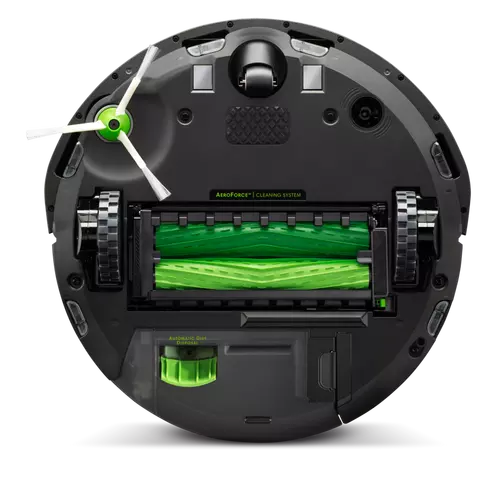

Cardo más cerca de una limpieza segura.
Los clientes de Cardo pueden acceder a su cuenta haciendo clic en
el siguiente enlace:
|
Con años de experiencia en el sector, nuestro equipo de expertos en limpieza comprende las necesidades específicas de tu negocio. Desde oficinas hasta espacios comerciales, nos adaptamos a cada entorno para proporcionar una limpieza personalizada y de calidad superior. Nuestro personal está altamente capacitado y comprometido con la excelencia en el servicio. Con un enfoque meticuloso en cada detalle, nos aseguramos de que cada rincón de tus instalaciones esté impecablemente limpio y ordenado. |
|  |
Utilizamos los mejores productos de limpieza y equipos de última generación para garantizar resultados sobresalientes. Nuestros métodos eficientes y respetuosos con el medio ambiente aseguran una limpieza profunda sin comprometer la salud ni el bienestar de tus empleados o clientes. Entendemos que cada empresa tiene horarios y necesidades únicas. Por eso, nos adaptamos a tu agenda para proporcionar servicios de limpieza que no interrumpan tu actividad comercial. Ya sea que necesites limpieza diaria, semanal o personalizada, estamos aquí para cumplir con tus expectativas. |